TrainingOS · UI polish
Latest account and shared-layout review → · Account now uses section navigation; the activity grid has been removed.
29 October 2026. Shared dark dropdowns, compact category defaults, quiet inline focus, account utilities, settings, data and a full-width first-plan state. Bodyweight tracking has been removed, including stored measurements and target preferences.
All screenshots use isolated sample data or an empty temporary local account. Layout checks cover 320px, 390px and 1440px. Preference persistence was verified against the real backend after reloading. Verification results · Original references
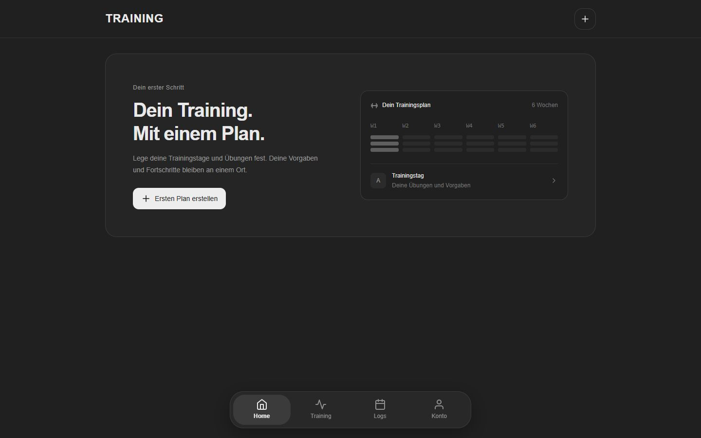
First plan · Desktop
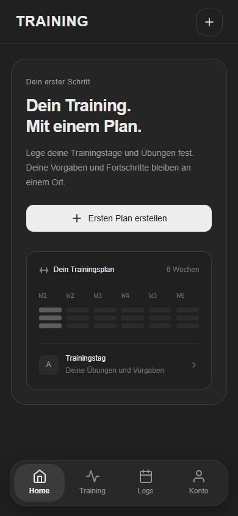
First plan · Mobile
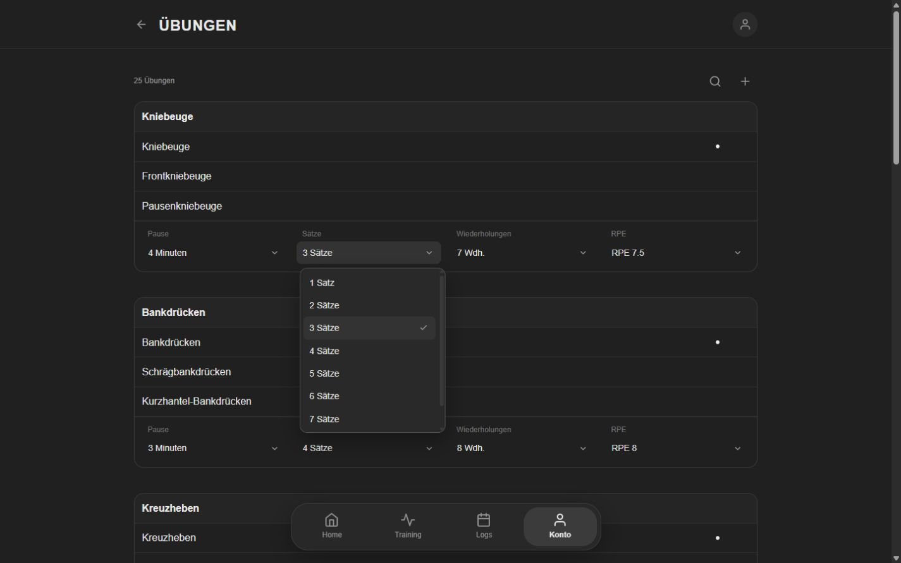
Category defaults · Desktop
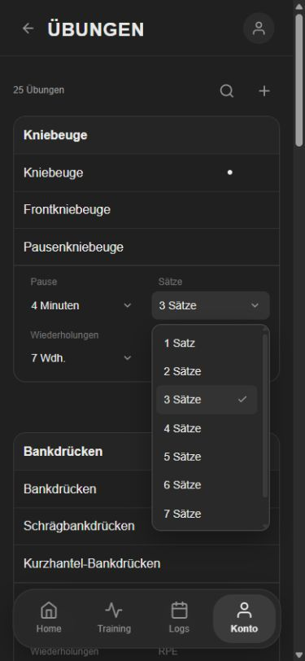
Category defaults · Mobile
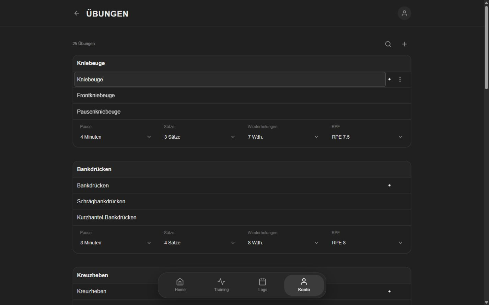
Inline focus · Desktop
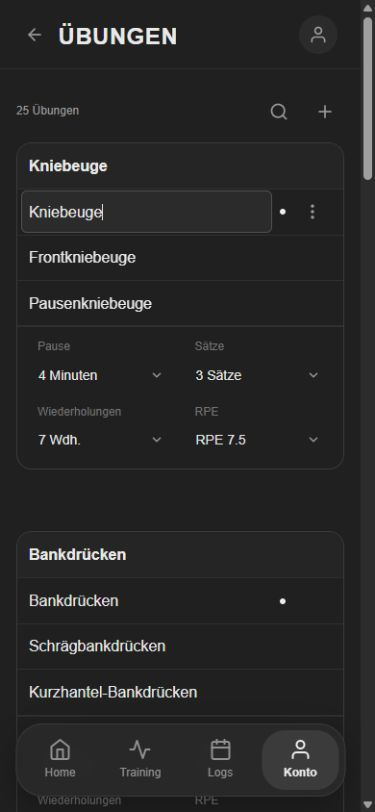
Inline focus · Mobile
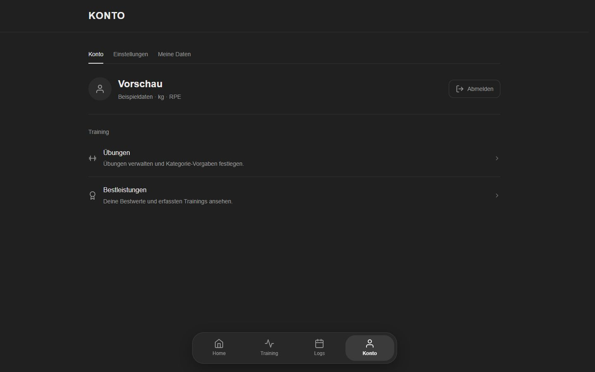
Account · Desktop
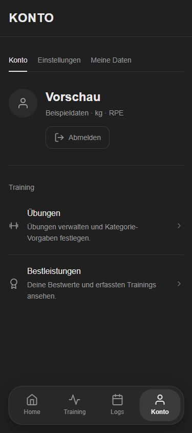
Account · Mobile
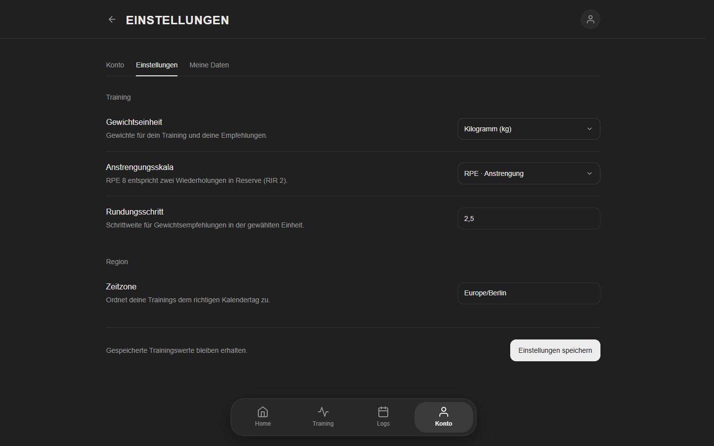
Settings · Desktop
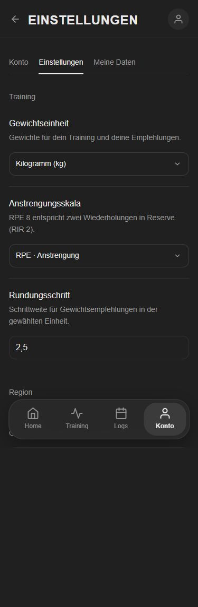
Settings · Mobile
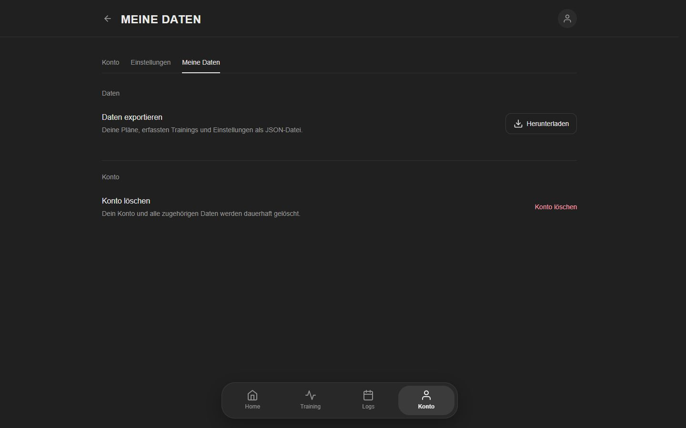
My data · Desktop
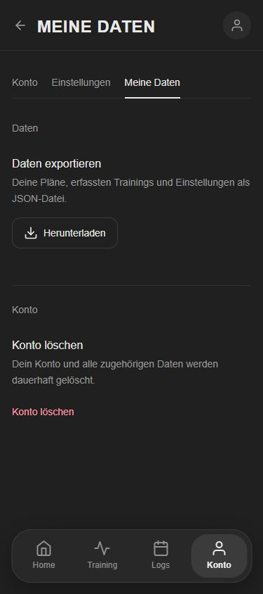
My data · Mobile